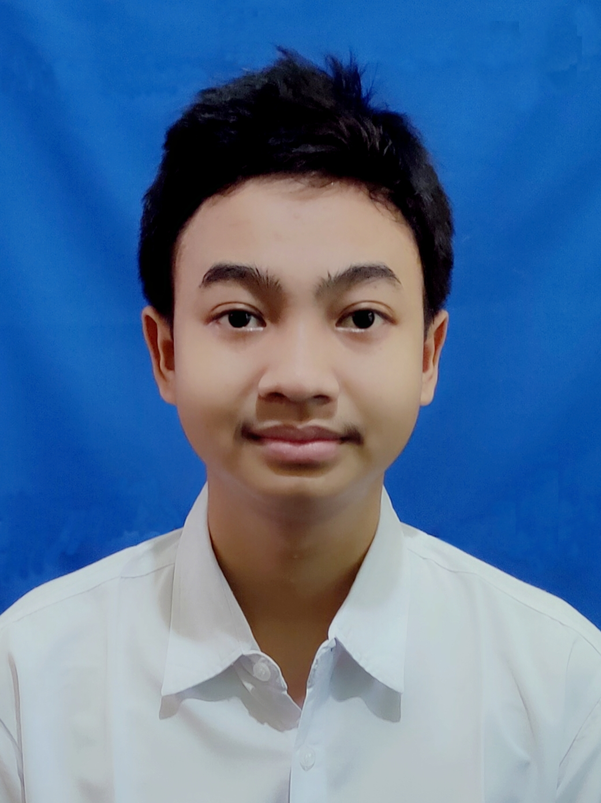

Foto Profil

Halo, saya adalah salah satu mahasiswa Institut Teknologi Sepuluh
Nopember.
Saya sedang belajar mata kuliah Pemrograman Web. Di sini saya sedang belajar membuat website menggunakan
HTML dan CSS. Ingin tahu lebih lanjut mengenai saya? Silahkan cek biodata saya dibawah ini.
| Tentang Saya | ||
|---|---|---|
| Nama | Ziaul Haq Al Karimi | |
| Departemen | Sistem Informasi | |
| NRP | 5026201123 | |
| Kelas | Pemrograman Web D | |
| zhaqi035@gmail.com | ||
| Hobi |
|
|
QuotesI have not failed. I’ve just found 10,000 ways that won’t work.
– Thomas
Edison
Riwayat Pendidikan
Institut Teknologi Sepuluh Nopember
SMA Negeri 1 Kota Kediri
MTs Negeri 1 Kota Kediri